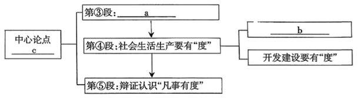

练习 · 论述类文本阅读
凡事有度
梳理“凡事有度”的论证结构，分析事例和结尾。
导读
凡事有度。阅读时留意不同材料、事例与观点之间的联系。
原文
原文按结构分节；随文内容可定位至对应段落。
观点论证：阐释“度”的含义及其在生活和发展中的运用。
凡事有度
①凡事有度，是为人处世的一种学问。
②“度”，它所表达的意思很多：计量单位、器量、程度、制度、度过、推测……而这里要说的“度”，是作为哲学名词的度，它是指一定的事物保持自己质的稳定性的数量界限，反映质与量的统一，在这种界限内，量的增减不会改变事物的质。但是量变积累的结果，总要超出这种界限，发生质变，破坏原来的度而建立新的度，一事物就转化为他事物。这个度就是事物由量的变化到发生质的变化的临界点。如水在标准大气压下，冷却到0℃即从液体转变为固体，加热到100℃即从液体转变为气体，0℃和100℃就是水从量变转化为质变的临界点，亦称为度量关系节线，只要温度保持在0℃~100℃之间，那么水的形态就不会发生变化。这就是我们所要说的保持事物属性的度。任何事物都有一定的度量准则。所谓“真理再往前走一步就是谬误”也就是这个道理。
③事物的发展，有它自身不以人的意志为转移的客观规律，有“度”，就是要尊重事物发展变化的客观规律，实事求是，把握分寸，尽可能做到恰到好处。按照现代的通常用语，就是审时度势，把握时机，坚持正确之道。
④时下，社会中出现的很多问题，无不是与“度”的掌握有关。家庭教育中存在一个“度”的把握，有一句话，叫做慈母多败儿。说的是一些做父母的只懂得溺爱子女，要什么给什么，放弃了教育和约束，使小孩养尊处优，娇生惯养，不爱读书，不想劳动，结果反而害了小孩。在开发建设过程中，“度”的把握就更有学问了。对于自然界赋予人类的资源，我们必须合理地开发利用，既不能让资源白白流失或埋在土里，但是也不能过度地开采、使用而破坏生态平衡，导致大自然的惩罚。过去一些地区不顾生态环境，盲目开发，引起种种灾害，教训深刻。
⑤事物总是不断地发展和变化着的。这种发展和变化往往会突破原来量的限制，引起质的变化。凡是有利于社会进步的发展和变化，是我们所希望的。所以掌握事物的度，既要注意决定事物质量的界限，又不能把事物的度绝对化，还要创造一定条件促使事物突破原有的度，发展为新事物，推动社会全面进步。因此，笔者认为凡事有度断不是墨守成规、裹足不前的保守思想，而是包含着审时度势、与时更新、推陈出新等一系列价值取向、价值选择的行为艺术。
⑥有“度”之论，也应有度。再说下去也许就过“度”了。本文就此打住。
第1题 · 论证思路
下面是第③~⑤段的论证思路，请补充完整。

a.______b.______c.______
参考答案1展开 / 收起
参考作答
a：事物的发展要有“度”；b：家庭教育要有“度”；c：凡事有度。
审题与考查点
结合题目限定，回到材料寻找依据，再按要求作答。
文本分析
推导查看证据 ↗
第③段谈事物发展，第④段依次谈家庭教育和开发建设，第⑤段讨论对“度”的辩证认识；图中c概括中心论点。
第2题 · 事例作用
第②自然段中以“水”为例来阐释“度”，有什么效果？请简要说明。
参考答案2展开 / 收起
参考作答
以标准大气压下水的相变为例，将抽象的质、量关系联系熟悉的现象，帮助理解“度”的界限。例子本身须按相变条件理解。
审题与考查点
结合题目限定，回到材料寻找依据，再按要求作答。
文本分析
推导查看证据 ↗
水的相变是具体事例，作者借以解释抽象的“度”和质、量关系。水在相变温度可能存在不同相态共存，不能认为到达某个温度便瞬间全部转变；在常压下，液态水在0℃至100℃之间也可能蒸发，保持温度不意味着水量或相态完全不变。
第3题 · 结尾作用
文章结尾一段颇具意味，请从内容和语言上作简要分析。
参考答案3展开 / 收起
参考作答
内容上回扣“凡事有度”，以适可而止收束；语言上反复运用“度”，同时指讨论的主题和行文分寸，简洁诙谐。
审题与考查点
结合题目限定，回到材料寻找依据，再按要求作答。
文本分析
推导查看证据 ↗
结尾将文章讨论的“度”用于自身的行文分寸，回扣主题，语气简洁诙谐。